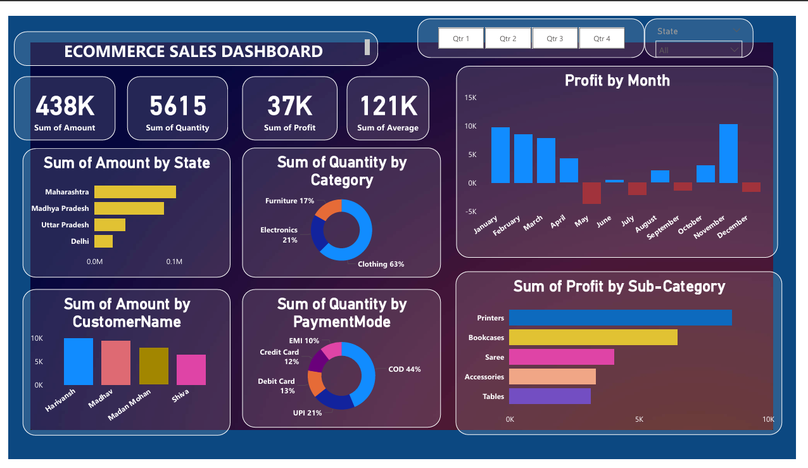
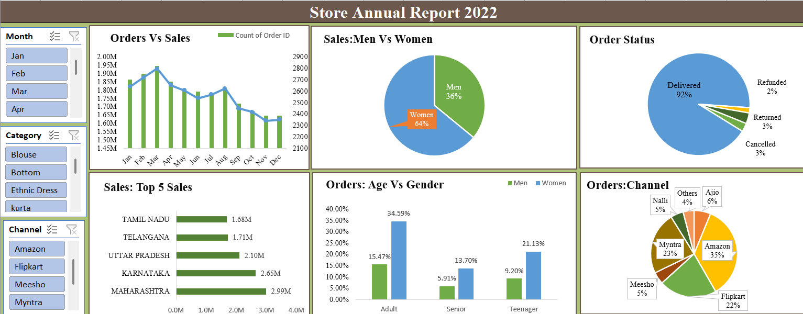
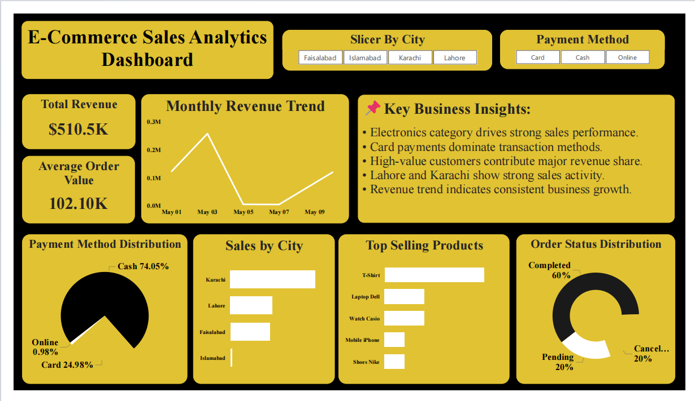
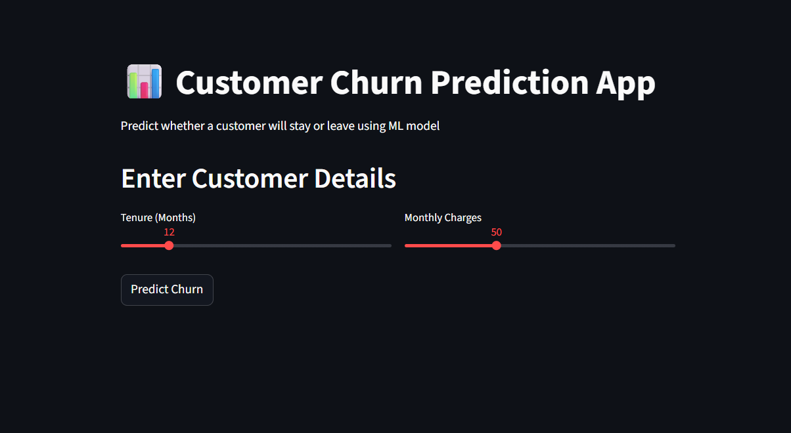
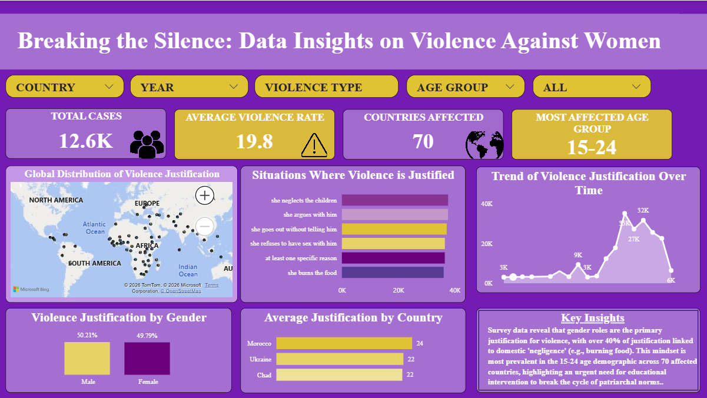
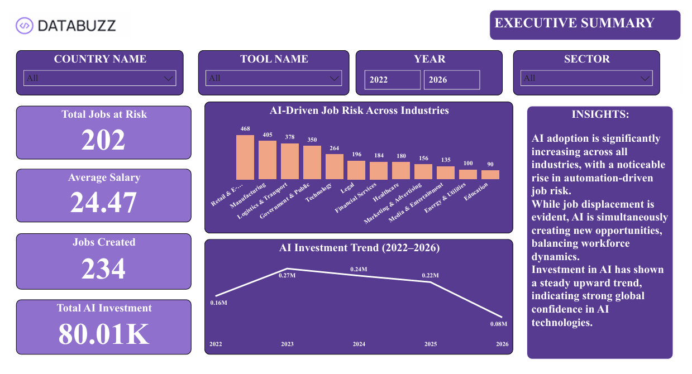
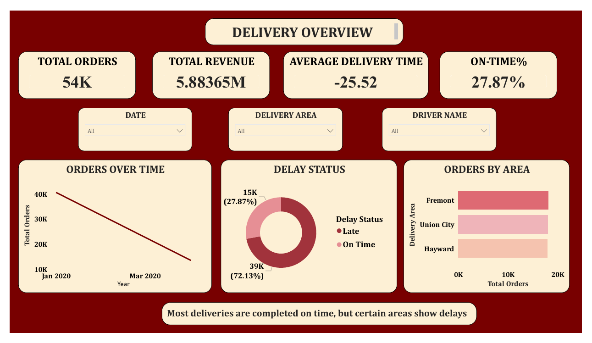

04. Projects & Dashboards

E-commerce Sales Dashboard
End-to-end sales analysis revealing profit margins and seasonal customer behaviors.

Store Sales Excel Dashboard
Interactive pivot spreadsheet tracking retail sales, profit margins, and dynamic categories.

E-Commerce Sales Analytics Dashboard
End-to-end analytics project uncovering revenue trends, customer insights, and product performance.

Customer Churn Prediction
End-to-end ML pipeline for predicting customer churn with interactive Streamlit dashboard.

HR Analytics Dashboard
Employee churn, attrition rate analysis, and department salary distributions.

Super Store Sales Dashboard
Forecasting-enabled dashboard with drill-down views of supply margins and profit.

HR Operational Dashboard
Sleek monitoring dashboard outlining active personnel dynamics and tracking role changes.

Supply Chain Dashboard
Logistics efficiency modeling tracking shipping delays and operational inventory costs.

Breaking The Silence Analysis
Geographic mapping and demographic indicators visualizing critical socio-regional datasets.

AI Skills vs Job Risk
Interactive index analyzing technical market shifts and automation exposure indices.

Food Delivery Dashboard
Analyzing dispatch times, cancellations, regional revenue, and fleet efficiency.